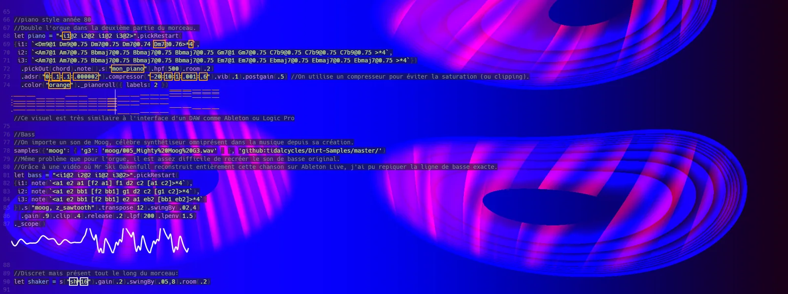

La Prépa des INP — Toulouse
Classe préparatoire intégrée du groupe INP
ENSEEIHT · TOULOUSE INP · 2026–2027
Mon parcours dans la filière Sciences du Numérique (SN) : cours clés, compétences et projets.
Classe préparatoire intégrée du groupe INP
Diplôme d'ingénieur, Sciences du Numérique (SN)
Python est mon langage le plus solide. J'utilise Ada en cours, Git, Linux et VS Code pour mes projets, LaTeX pour mes rapports, et Claude Code pour le développement assisté par IA.
Analyse et visualisation de jeux de données en Python.
Un solide bagage scientifique acquis en deux ans de classe préparatoire, et de vraies qualités de travail en équipe et d'organisation.
Cliquez sur une carte pour voir le contexte, mon rôle, les outils et le résultat.

(agrandir)À venir au S6 : mes premiers projets d'ingénieur apparaîtront ici.